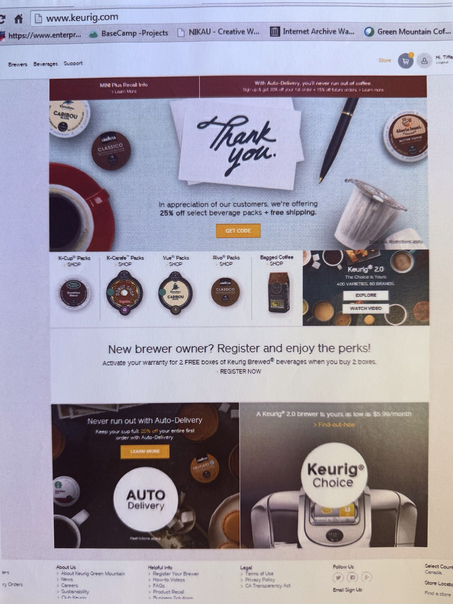
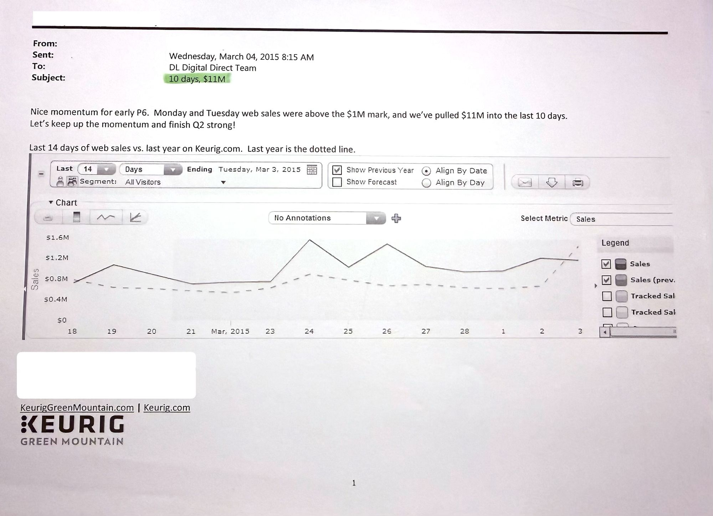
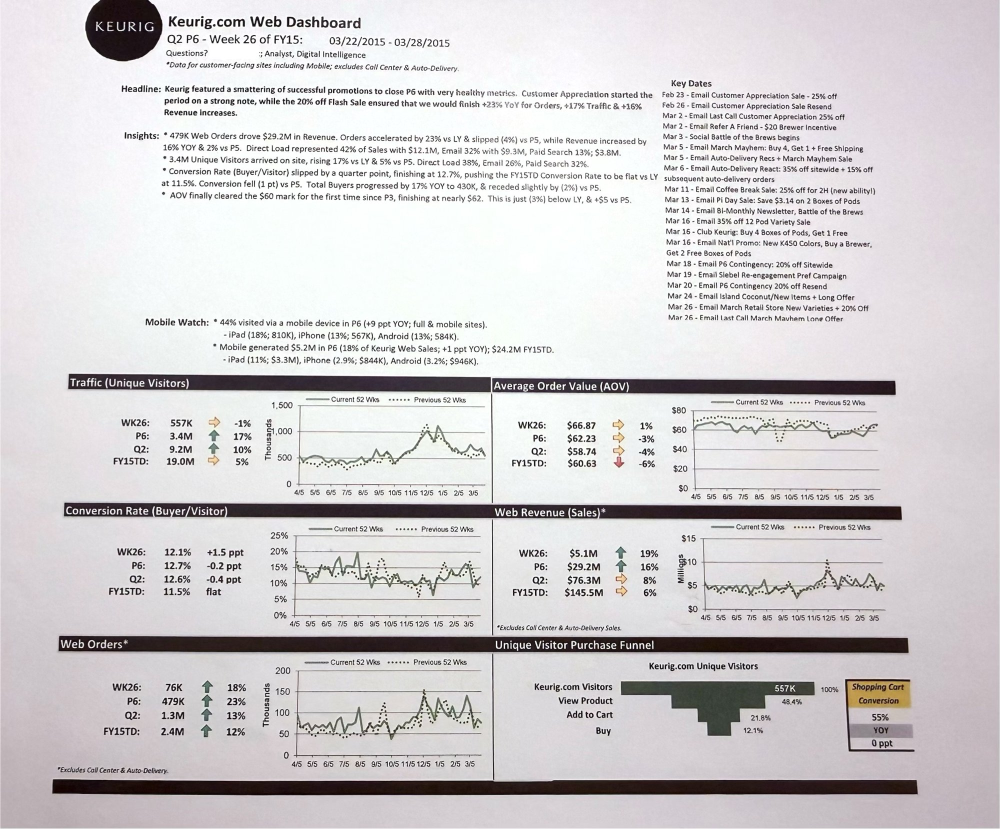

The result
$11M Web sales in 10 days Keurig.com, in the 10 days to March 3, 2015. Monday and Tuesday each topped $1M.
#1 Coupon campaign of the period THANKS25 drove 176K orders in 10 days, ahead of every other major P6 campaign.
+46% Sale-week revenue vs. last year $7.6M against $5.2M in fiscal week 22. The goal in the brief was +10%.
27.5K Customers new to file Acquired through the THANKS25 code.
+27% Email revenue vs. last year $9.3M for the period, 8% over target. The sale launched in email on Feb 23.
+23% Web orders vs. last year Period close: 479K orders, with traffic up 17% and revenue up 16%.
The brief
Background As part of the FY2015 P6 campaigns, Keurig.com offered a Customer Appreciation Sale: a percentage off for Loyalists (email and landing pages only) and for everyone else, Buyers and Prospects.
Goal Meet, or ideally exceed by 10%, last year.
Audience V1, Loyalists (email and landing pages only). V2, all others: Buyers and Prospects.
Offer V1, 25% off sitewide + free shipping. V2, 20% off beverage packs + free shipping. Codes THANKS25 and THANKS20.
Concept A personal, handwritten note. “A personal, sincere, authentic approach to celebrate and thank” customers.
How it ran
7 weeks out Brief Creative briefs go in with manager approval, as a general rule seven weeks before launch.
Feb 9 Assets due Web and email assets due, a minimum of two weeks before launch.
Feb 23 Launch Email goes out with 25% off + free shipping. Resend on Feb 26, last call on Mar 2.
Mar 4 Results “10 days, $11M.” Monday and Tuesday web sales above $1M, reported to the Digital Direct team.
The assets 24 deliverables across five channels, in two offer versions: V1, 25% off sitewide for Loyalists, and V2, 20% off beverage packs for everyone else. Every one shared the same idea: personal, sincere, authentic.
Keurig.com 6 Campaign landing page, V1 and V2 1200 × variable Module 1, left red promo band (copy only) 798 × 70 Module 3, home hero 1200 × 485 Module 5, tier 2 right 400 × 241 Module 7, tout 599 × 475 Mobile 3 Landing page, V1 and V2 600 × variable Home module 564 × 260 Email 4 V1 original and resend current template V2 original and resend current template Web advertising 9 Banner sizes 300×250 · 728×90 · 160×600 · 336×280 · 320×50 · 120×60 · 120×90 · 125×125 · 200×200 468 × 60 added only for offers longer than two weeks.
Social 2 Newsfeed post 1200 × 1200 Shared banner 1200 × 627
The production timeline Dec 31 Submitted for approval and for creative review Jan 5 Campaign creative review Jan 13–16 Copy due, reviewed by requestor and PM, final copy to designer Jan 27–29 Email and web design reviews; approvals signed Jan 30 Creative makes changes and loads to the asset repository Feb 6 Final artwork to the project manager; last day of proofing Feb 9 Assets submitted to web for set-up and testing Feb 23 Promotion starts; email deploys Feb 26 Reminder email Mar 1 Promotion ends +10 days Promotional analysis
The creative

Keurig.com homepage The Thank You hero: “In appreciation of our customers, we’re offering 25% off select beverage packs + free shipping.”
The proof

“10 days, $11M” The team email of March 4, 2015, with the last 14 days of web sales against last year (dotted line).

Keurig.com Web Dashboard Week 26 of FY15: traffic, order value, conversion, revenue and orders against last year.